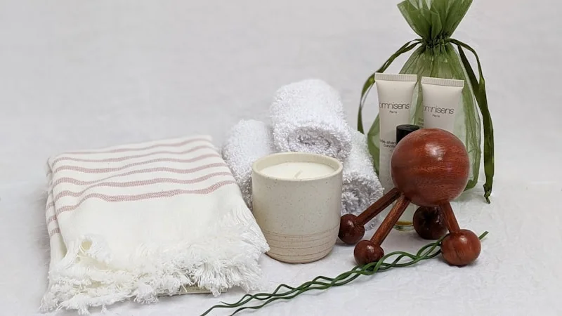
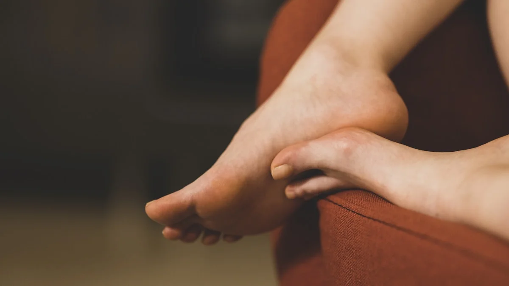

朝起きた瞬間から疲れているあなたへ。東洋医学と自律神経から紐解く「冷えと慢性疲労」を解消する3つの養生法
2026.06.23

朝、目覚まし時計が鳴った瞬間から、鉛のように体が重い。しっかり寝たはずなのに、頭がすっきりとせず、布団から起き上がるのが億劫……。そんな「寝ても取れない疲れ」にお悩みではありませんか？「なんとなく疲れている」というレベルではなく、朝起きた瞬間からすでにエネルギーが枯渇しているような感覚。それは気のせいでも、あなたの怠け心でもありません。栄養ドリンクを飲んだり、週末に寝溜めをしたりしても解消されないその慢性的な疲労感の背景には、体の中で起きている深刻な「冷え」と「自律神経の乱れ」が隠されています。セルフケアブランド「fucuu（フクウ）」の専属ライターであり、東洋医学と自律神経の専門家として、あなたの体が発しているSOSの正体を解き明かし、本来の健やかで心地よい「わたし」に戻るための具体的な養生法をお伝えします。
なぜ寝ても疲れが取れないのか？体が冷えて疲労が溜まるメカニズム
「寝ても疲れが取れない」という不調の科学的なメカニズムは、自律神経のバランス崩壊とそれに伴う末梢血流の悪化にあります。私たちの体をコントロールする自律神経には、日中に活発になる「交感神経」と、夜間にリラックスして体を修復する「副交感神経」があります。しかし、日々のストレスや寒さ、PCやスマートフォンの使いすぎによって交感神経が過剰に優位な状態（過緊張）が続くと、血管が強く収縮してしまいます。血管が収縮すると、酸素や栄養を運ぶ血液が体の隅々まで届かなくなり、末梢が冷え切ってしまいます。この血流不足によって筋肉や臓器に疲労物質（乳酸や老廃物）が蓄積し、どれだけ眠っても取れない慢性的な疲労感や重だるさの正体となるのです。
さらに東洋医学の視点を加えると、この状態は身体のエネルギーである「気（き）」と、栄養を全身に運ぶ「血（けつ）」の巡りが滞り、不足している「気虚（ききょ）」および「血虚（けっきょ）」の状態と言えます。東洋医学において「冷え」と「疲労」は表裏一体です。特に、生命エネルギーの貯蔵庫であり、体を内側から温める火種の役割を持つ五臓の「腎（じん）」が冷えによって弱まると、夜間に細胞や組織を修復・滋養する力が極端に低下します。その結果、睡眠をとっても心身が修復されず、朝起きた瞬間から疲労感に襲われるという悪循環に陥るのです。この悪循環を断ち切るには、自律神経を整えながら、物理的に体を内側から温める「温活」と「養生」が不可欠です。
明日からすぐ無料でできる！冷えと疲労を解消するセルフケア養生法3選
1. 【夜の養生】万能の冷え解消ツボ「三陰交（さんいんこう）」の3秒指圧
【手順】
内くるぶしの最も高いところから、自分の手の指4本分（人差し指から小指まで）上がった場所にある、すねの骨の後ろ側のキワの凹み（三陰交）を見つけます。両手の親指を重ねてツボに当て、息を細く長く吐きながら、「痛気持ちいい」と感じる強さで3秒かけてじっくりと押し込み、3秒かけてゆっくりと指を離します。これを左右の足でそれぞれ10回繰り返してください。お風呂上がりや就寝前の布団の中など、体が温まっている状態で行うとより効果的です。
【なぜ効くのか（根拠）】
東洋医学において、三陰交は「脾（消化吸収）」「肝（自律神経・血の貯蔵）」「腎（生命力・水分代謝）」という、健康を維持するために極めて重要な3つの経絡（エネルギーの通り道）が交わる場所です。このツボを刺激することで、骨盤内の血流が促進され、下半身の冷えが強力に改善されます。また、末梢の血管を拡張させて副交感神経を優位にするため、深部体温が下がりやすくなり、質の高い深い睡眠（ノンレム睡眠）へと導かれ、翌朝の疲労回復度が劇的に向上します。
2. 【朝の養生】自律神経をリセットする「4・7・8呼吸法」
【手順】
朝起きてすぐ、布団の中に横たわったまま行います。
1. まず、口から息を完全に「はぁー」と吐ききります。
2. 次に、鼻から4秒間かけて、静かに深く息を吸い込み、お腹を膨らませます。
3. そのまま息を7秒間止めます。
4. 最後に、8秒間かけて、口から「ふぅー」と細く長い音を立てながら、ゆっくりと息を吐き出します。
このサイクルを4回繰り返します。秒数は厳密でなくても構いません。「吸う：止める：吐く」の比率が「4：7：8」に近くなるように意識してください。
【なぜ効くのか（根拠）】
自律神経は自らの意思で直接動かすことはできませんが、唯一「呼吸」を介してコントロールすることができます。特に息を吐く動作を長く行うことは、心拍数を下げ、副交感神経をダイレクトに刺激する強力な手段です。また、一時的に息を止めることで血中の二酸化炭素濃度がわずかに上昇し、これが脳や末梢の血管を広げるシグナルとなり、全身の血流が劇的に改善します。朝の過剰な交感神経の緊張（朝の血圧急上昇や動悸）を和らげ、目覚め直後から全身に温かい血液を行き渡らせることで、だるさをリセットします。
3. 【夕方の養生】第2の心臓を動かす「ふくらはぎの経絡さすりマッサージ」
【手順】
床か椅子にリラックスして座り、片方の膝を立てます。両手の手のひら全体をふくらはぎに密着させ、アキレス腱の少し上あたりから、膝の裏側にある凹み（委中：いちゅうというツボがあります）に向かって、下から上へと引き上げるようにさすり上げます。少し圧をかけながら、痛気持ちいい強さで、片足ずつ各15回繰り返します。夕方、仕事の合間や入浴前などに行うのがベストです。
【なぜ効くのか（根拠）】
ふくらはぎは「第2の心臓」と呼ばれ、重力によって下半身に滞った静脈血を心臓へと押し戻すポンプの役割を果たしています。また、ふくらはぎの後ろ側には、自律神経や背骨の健康と深く関わる「足の太陽膀胱経（たいようぼうこうけい）」という長い経絡が走っています。ここをマッサージすることで、滞っていた血液やリンパ液が物理的に循環し始め、全身の血流量がアップします。これにより、夕方以降に溜まりやすい足元の冷えと全身の疲労感をその日のうちに解消し、夜の安眠へとスムーズにバトンを渡すことができます。

実践のヒント
セルフケアや養生は、「毎日完璧にやらなければならない」という義務感で行う必要はありません。その義務感自体がストレスとなり、交感神経を刺激してしまうからです。「今日は疲れたからツボ押しだけ」「朝起きるのが辛いから呼吸法だけ」といったように、気が向いた時に心地よいと感じる範囲で1つだけ取り入れてみてください。自分の身体の声を聴き、労るその時間自体が、自律神経を整える最大の養生になります。
「わたしに戻る」時間を、少しずつ。fucuuが寄り添う温かな日常
朝の重だるさや、寝ても抜けない慢性疲労は、あなたの身体が一生懸命に発している「冷えと自律神経の不調」のサインです。今回ご紹介した三陰交のツボ押し、朝の4・7・8呼吸法、ふくらはぎのマッサージは、どれも特別な道具を使わず、今日から今すぐ始められる強力なセルフケアです。まずは今日、眠る前の数分間だけ、ご自身の足を優しく撫でてあげることから始めてみてください。身体がじんわりと温まり、翌朝の目覚めが少しずつ軽やかになっていく変化を実感できるはずです。
しかし、仕事や家事、育児に追われる日々の中で、どうしても自分をケアする気力や時間すら残っていない日もありますよね。そんな忙しい日は、お風呂に入るという毎日の当たり前の習慣を、究極のセルフケアタイムに変えてみませんか？セルフケアブランド「fucuu（フクウ）」の100%生薬入浴剤は、厳選された和漢植物のちからをそのままお湯に溶け込ませ、お湯に浸かるだけで身体の芯から温め、こわばった心と身体を優しく解きほぐします。無添加にこだわり、大自然の香りと確かな生薬のちからで、自律神経を穏やかに整えます。自分で何かをする余裕がないときこそ、fucuuの力を借りてみてください。植物のちからをかりて「わたしに戻る」穏やかなひとときが、あなたの日常に温かい幸福感（フクフク）をもたらしてくれますように。
fucuuの生薬入浴剤・国産アロマは、BASEオンラインショップでご購入いただけます。
BASEで購入する